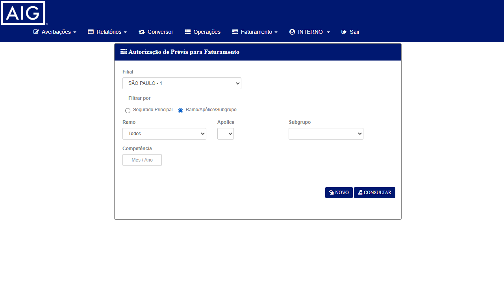
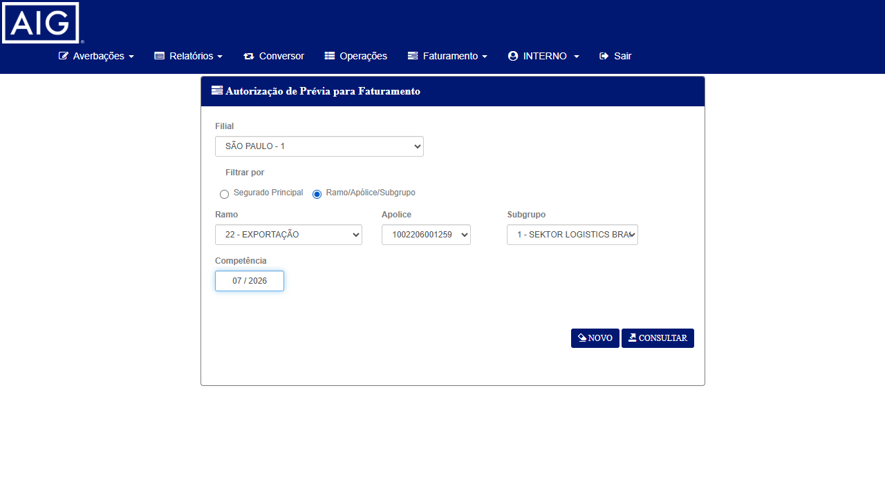
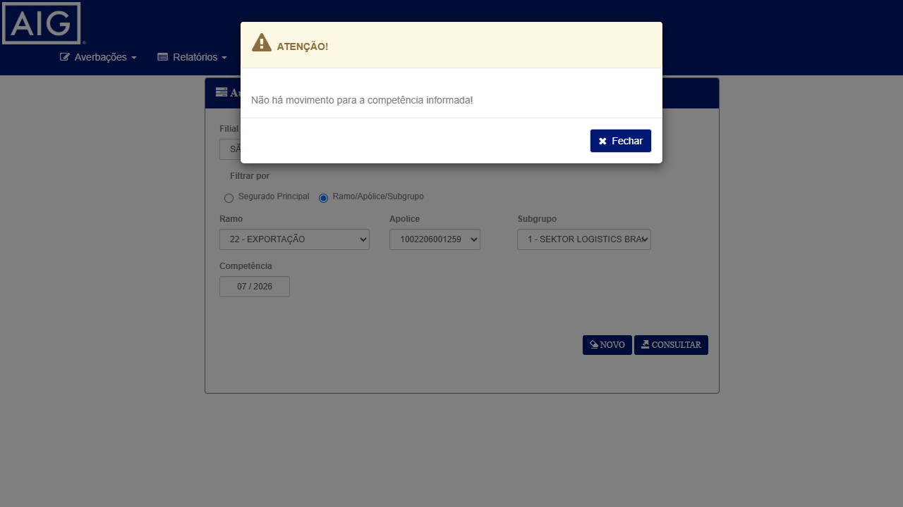
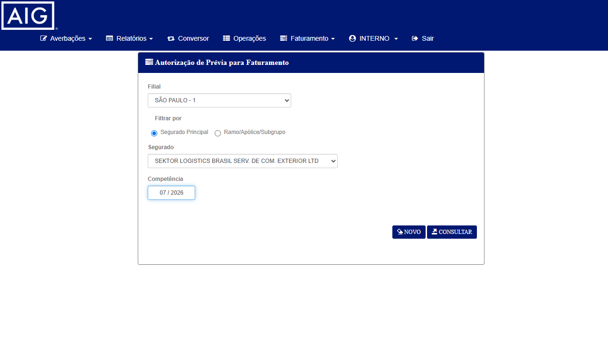

Dados do Card
Cenário Original (com bug)
Na tela de Aprovação de Prévia Internacional, ao selecionar a Filial
e clicar no radio "Ramo/Apólice/Subgrupo" (antes mesmo de escolher um Ramo), a função
CarregaApolice() disparava POST /Apolice/Listar com o Ramo em branco —
escaneando TODAS as apólices da filial de uma vez. O sistema respondia HTTP 500 e
exibia o modal "Erro na Consulta de Fechamento de Fatura!" para ambos os filtros de consulta.
Stack: ApoliceNacionalRepository.Listar_Aig() => Input string was not in a correct format.
— campos c_pro, c_idt_pes_cli e c_idt_pes_cvd lidos sem guarda de nulo/vazio.
Fix Aplicado (PR #1826)
Adicionada guarda de nulo/vazio na leitura dos campos c_pro, c_idt_pes_cli e
c_idt_pes_cvd em Listar_Aig() — mesmo padrão já corrigido no ADO-7752
(Listar_Axa). A consulta passa a executar sem FormatException.
Critério de Aceite (reteste)
- Ao clicar no radio "Ramo/Apólice/Subgrupo" com a Filial selecionada,
POST /Apolice/Listardeve responder HTTP 200 (sem FormatException) e carregar os campos Ramo/Apólice/Subgrupo. - A consulta de prévias Internacional (Ramo 22) — por apólice e por segurado — deve executar sem o erro genérico "Erro na Consulta de Fechamento de Fatura!".
- O sistema deve exibir a grid de prévias OU a mensagem de negócio normal "Não há movimento para a competência informada!" (idem ao Nacional corrigido no BUG-7706).
CITNET AIG — HML (citnetvulnera)
https://aig-hml-faturamento.nsseg.com.br/citnetvulnera//citnet/ antigo apontava para Oracle SIM50B sem a massa do card)INTERNO / •••••• (senha no .env) — sem selecionar filial na tela de loginAutorizacaoPrevia/AutorizacaoPrevia)POST /Apolice/Listar e POST /AutorizacaoPrevia/ConsultarPreviaLiberarInternacional — Ramo 22 EXPORTAÇÃO (por Apólice)
Internacional — Ramo 22 (por Segurado)
4244832831, segurado
"VOIDR TESTES") pertencia ao banco Oracle antigo e não existe no citnetvulnera (SQL Server).
Massa descoberta dinamicamente na UI conforme protocolo de execução — a mesma apólice
1002206001259 usada pelo dev na validação pós-deploy foi reutilizada para rastreabilidade.
Pré-condições
citnetvulnera acessível e login INTERNO / •••••• (senha no .env) efetuado (sem filial)2. Tela Faturamento → Aprovação de Prévia carregada (
AutorizacaoPrevia/AutorizacaoPrevia)3. Filial 1 com apólices do Ramo 22 EXPORTAÇÃO disponíveis
4. Reproduz o gatilho exato do bug: seleção de Filial + clique no radio "Ramo/Apólice/Subgrupo"
Passos
| # | Ação | Resultado Esperado |
|---|---|---|
| 1 | No campo Filial (#c_org_prd), selecionar 1 — SÃO PAULO | Filial selecionada |
| 2 | Clicar no radio "Ramo/Apólice/Subgrupo" (#optApo) — dispara CarregaApolice() → POST /Apolice/Listar | HTTP 200 (era HTTP 500/FormatException); campos Ramo/Apólice/Subgrupo aparecem sem modal de erro |
| 3 | No campo Ramo (#c_rmo), selecionar 22 - EXPORTAÇÃO | Combobox de Apólices carrega (4 apólices reais) |
| 4 | Selecionar Apólice 1002206001259 (#u_apo_pnc) | Subgrupo auto-selecionado (1 — SEKTOR LOGISTICS) |
| 5 | Preencher Competência (#mes_ano) com 07/2026 | Campo formatado "07 / 2026" |
| 6 | Clicar em Consultar (#btConsultar) — dispara POST /AutorizacaoPrevia/ConsultarPreviaLiberar | HTTP 200; grid de prévias OU mensagem de negócio normal — sem o erro genérico |
Resultado da Execução
Filial 1 — SÃO PAULO | Ramo 22 - EXPORTAÇÃO | Apólice 1002206001259 | Subgrupo 1 | Competência 07/2026
Passo 2 (gatilho do bug):
POST /Apolice/Listar → HTTP 200
(FormatException eliminada). Campos Ramo/Apólice/Subgrupo carregaram sem modal de erro.Passo 6 (consulta):
POST /AutorizacaoPrevia/ConsultarPreviaLiberar → HTTP 200.
Retornou a mensagem de negócio normal: "Não há movimento para a competência informada!" —
o erro genérico "Erro na Consulta de Fechamento de Fatura!" NÃO ocorreu
(confirmado via browser_evaluate: textoErroFatura = false).



Pré-condições
2. Radio "Segurado Principal" (
#optSeg) — marcado por padrão3. Segurado do Ramo 22 disponível na Filial 1 (SEKTOR LOGISTICS, o segurado da apólice 1002206001259)
Passos
| # | Ação | Resultado Esperado |
|---|---|---|
| 1 | Reabrir a tela de Aprovação de Prévia (form limpo) e selecionar Filial 1 (#c_org_prd) | Filial selecionada; combobox de segurados carrega (Cliente/ListarPorFilial → HTTP 200) |
| 2 | Manter o radio "Segurado Principal" (#optSeg) marcado | Campo Segurado visível |
| 3 | No campo Segurado (#c_idt_pes), selecionar SEKTOR LOGISTICS BRASIL | Segurado preenchido |
| 4 | Preencher Competência com 07/2026 | Campo formatado "07 / 2026" |
| 5 | Clicar em Consultar (#btConsultar) — dispara POST /AutorizacaoPrevia/ConsultarPreviaLiberar | HTTP 200; grid de prévias OU mensagem de negócio normal — sem o erro genérico |
Resultado da Execução
Filial 1 — SÃO PAULO | Segurado SEKTOR LOGISTICS BRASIL (CNPJ 17213222000195) | Competência 07/2026
POST /AutorizacaoPrevia/ConsultarPreviaLiberar → HTTP 200.
Retornou a mensagem de negócio normal: "Não há movimento para a competência informada!" —
o erro genérico "Erro na Consulta de Fechamento de Fatura!" NÃO ocorreu
(confirmado via browser_evaluate: textoErroFatura = false).
Confirma que o fix cobre ambos os filtros (por apólice e por segurado) no Internacional.

| CT | Critério de Aceite | Cenário | Prioridade | Resultado |
|---|---|---|---|---|
CT-APV-003 | CA1+CA2+CA3 — radio dispara POST 200; consulta por apólice sem erro genérico | Internacional / Filial 1 / APO 1002206001259 / Ramo 22 | P1 | APROVADO |
CT-APV-004 | CA2+CA3 — consulta por segurado sem erro genérico | Internacional / Filial 1 / SEKTOR LOGISTICS | P1 | APROVADO |
Reteste Aprovado — 2/2 CTs (100%)
O fix do PR #1826 corrige o fluxo Internacional (Ramo 22) da Aprovação
de Prévia no CITNET AIG. O gatilho exato do bug (Filial + radio "Ramo/Apólice/Subgrupo") agora responde
HTTP 200 — a FormatException em Listar_Aig() foi eliminada —
e as consultas (por apólice e por segurado) executam sem o erro genérico "Erro na Consulta de Fechamento de Fatura!",
exibindo a mensagem de negócio normal. Comportamento idêntico ao Nacional já corrigido no BUG-7706.